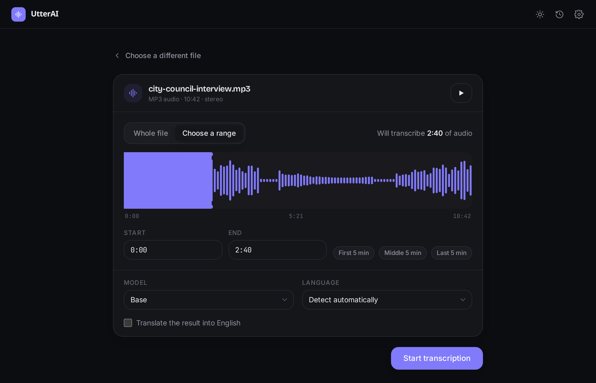
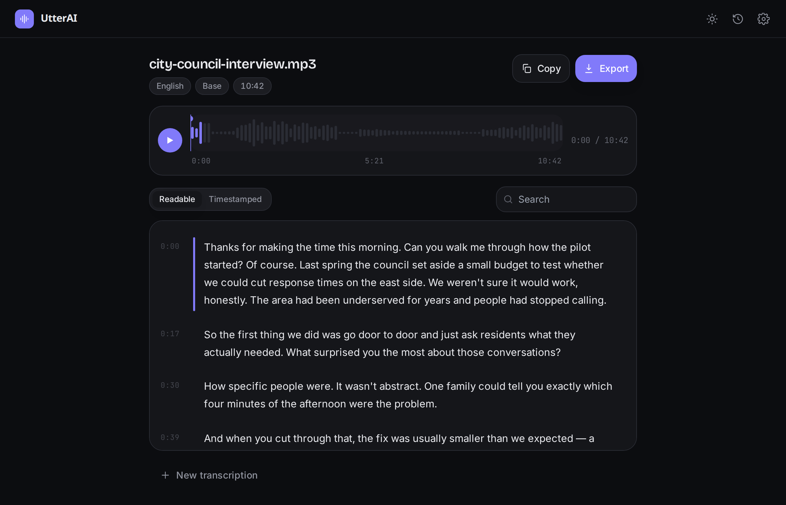
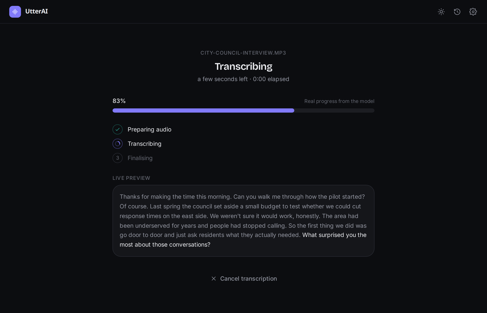

Step 1
Choose a file and trim it
Drop in audio or video — MP3, WAV, M4A, MP4, MKV and more. Pick the whole thing or drag the handles to a range. You always see exactly how much will be transcribed.

Runs on your machine · Open source
UtterAI transcribes audio and video right on your computer. No account, no upload, no API key — and it keeps working with the Wi‑Fi off.
— downloads · Windows & Linux · MIT licensed

Why local
Personal recordings shouldn't have to pass through someone else's servers to become text. UtterAI does the work locally, so they don't.
Audio never leaves the device. The only network request UtterAI makes is downloading a model — and only when you ask it to.
Trim to the five minutes that matter and UtterAI transcribes just that. The built‑in model runs several times faster than real time.
Powered by OpenAI's Whisper models via whisper.cpp. Start with the built‑in model; step up to Large (Turbo) for accents and noise.
How it works
Drop in audio or video — MP3, WAV, M4A, MP4, MKV and more. Pick the whole thing or drag the handles to a range. You always see exactly how much will be transcribed.

A real percentage from the model, the current stage, and a live preview of the text as it comes in. If it can't give an exact number, it tells you what it's doing instead.

A readable transcript and a timestamped view. Click any line to play it, search the text, fix a word, then export to TXT, SRT, VTT, Markdown or JSON.
Output
1 00:00:00,000 --> 00:00:03,480 And so, my fellow Americans, ask not 2 00:00:03,480 --> 00:00:07,020 what your country can do for you
Details
Handles, numeric in/out, and quick presets like "last 5 minutes".
Click a line to jump there; the current line highlights as it plays.
Find any phrase, double‑click to correct a word, export the fixed version.
Base is built in. Small, Medium and Large (Turbo) download on demand with resume.
Auto‑detects the language, or set it yourself. Optionally translate to English.
Recent transcripts stay on your machine so you can reopen and re‑export them.
Download
Free and open source. No sign‑up. Roughly 120 MB, model included.
Every release is built by GitHub Actions with published checksums. All releases and notes →
Questions
No. Transcription happens on your computer. UtterAI only uses the network when you choose to download a larger model, and this website only reads the public download count from GitHub.
No. The Whisper models run locally through whisper.cpp. There's no key and no per‑minute cost.
The built‑in Base model handles clear speech well. For accents, crosstalk or noisy audio, download the Small, Medium or Large (Turbo) model from Settings — accuracy goes up, speed comes down.
Common audio and video: MP3, WAV, M4A, AAC, FLAC, OGG, Opus, MP4, MKV, MOV, WebM and more. If a file has an audio track, UtterAI can usually transcribe it.
No hard limit. Longer files take longer; trimming to the part you need keeps it quick.
Whisper supports around 100 languages. UtterAI auto‑detects, or you can choose one. It can also translate speech to English.
Not yet. The transcription engine is a portable Rust crate, so a Mac build is feasible later. Windows and Linux come first.